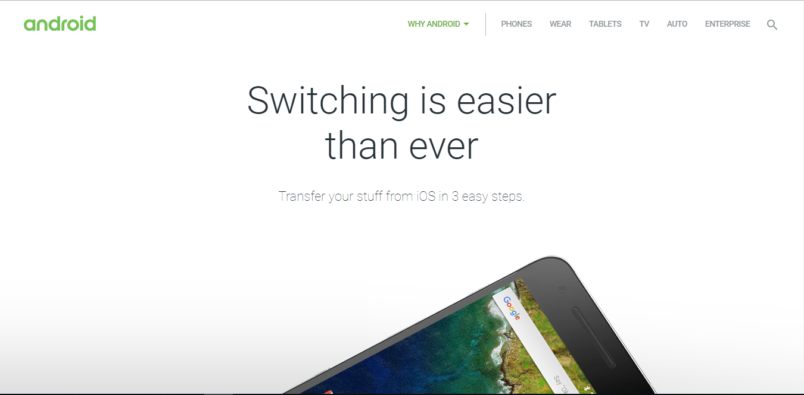
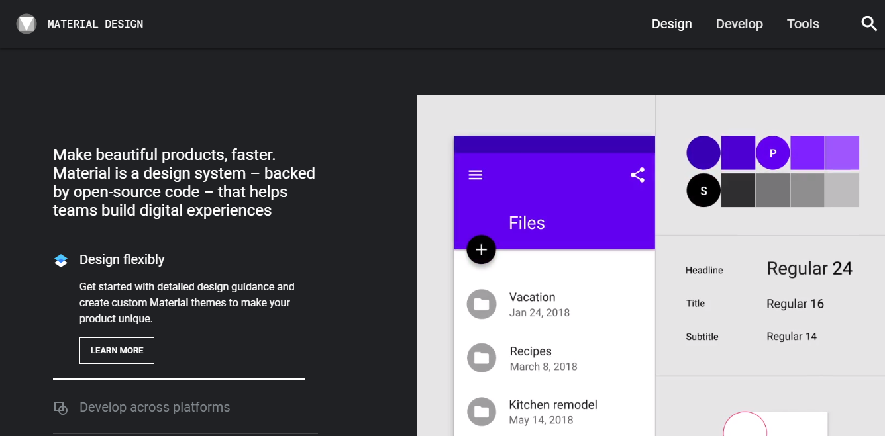

Copyright ©2001, UNAIS-ALL RIGHT RESERVED.
Contact information: narukkottilhameed@gmail.com.com


User Interface is the one of the most important area in developing a web page, as it will decide the quality and the usability of the websites.
Material Design provides a really good area to build a clean user interfaces. Material Design have several features that make it stand out and one of the main thing is that material design is very clean compared to others.
Material Design unifies across different platforms and ecosystems. It is highly flexible and dynamic user interface.
It have very intentional bold colors and topography. Everything goes in a smooth motion so it doesn't make any wierd animations
Screenshots of website that gave inspiration are given below
https://material.io is a great place to start doing the material design as it have all the resources needed for creating a website, application or UI in compliance with the material design.
In this assignment the author have tried to make the website in compliance with the material design by avoiding 3D designs and going for a flat style. The website also uses colors so that it will fbe more cleaner to look at and navigate through.